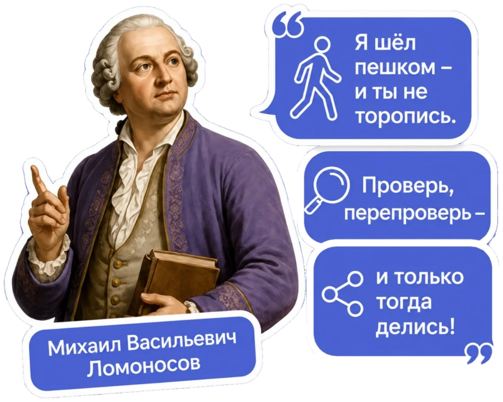
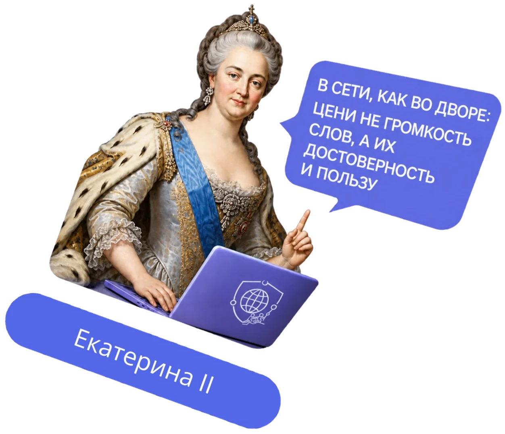
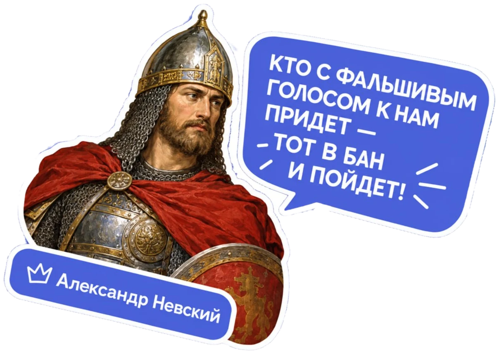
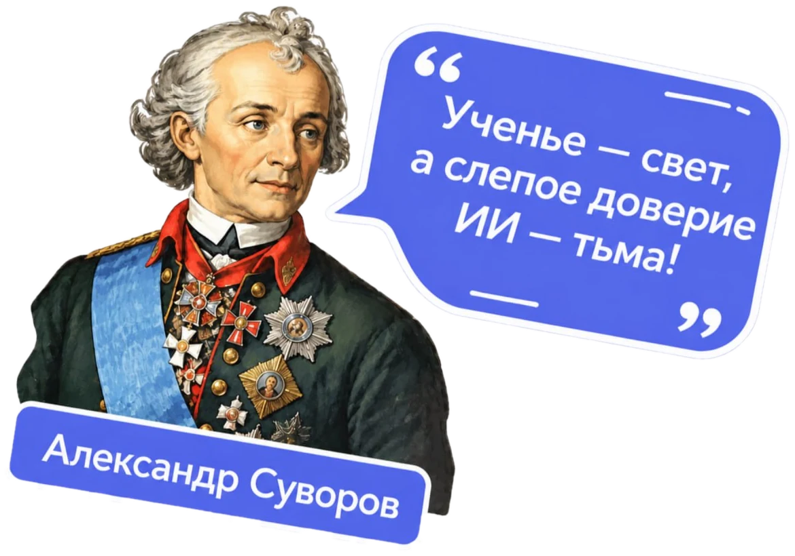
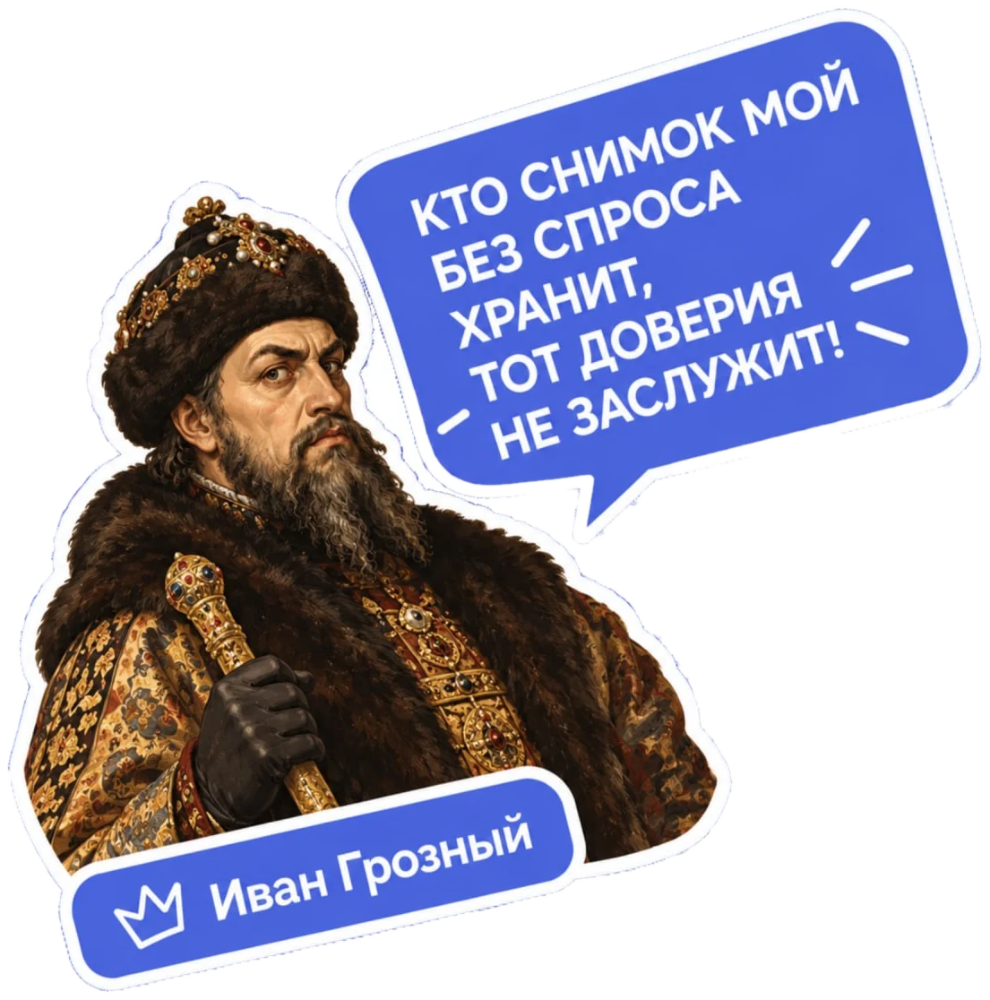
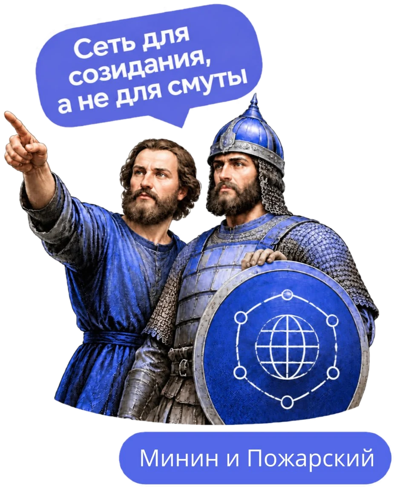

Кодекс этики
Простые и понятные правила поведения в цифровой среде.
Читать Кодекс
Просвещаем в вопросах интернет-безопасности.
Поддерживаем тех, кто столкнулся с угрозами в сети.
Создаём возможности для молодёжи.
Простые и понятные правила поведения в цифровой среде.
Читать КодексОн помогает делать осознанный выбор в интернете, защищать себя и других, развивать критическое мышление и быть частью безопасного цифрового общества.
Подробнее о проектеКоротко о главных правилах. Полный текст Кодекса — в отдельном разделе.
Как безопасно и ответственно вести себя в цифровом мире.
Правила и подсказки для корректной работы и общения.
Памятка и примеры, которые помогут избежать рисков и получать достоверную информацию.
Сейчас: разработка Кодекса и пилотная интеграция в образование
Новости, новые материалы, возможности для участия.
Узнать большеИсторические личности говорят о правилах цифровой среды — коротко, с юмором и по делу. Делитесь стикерами с друзьями.





